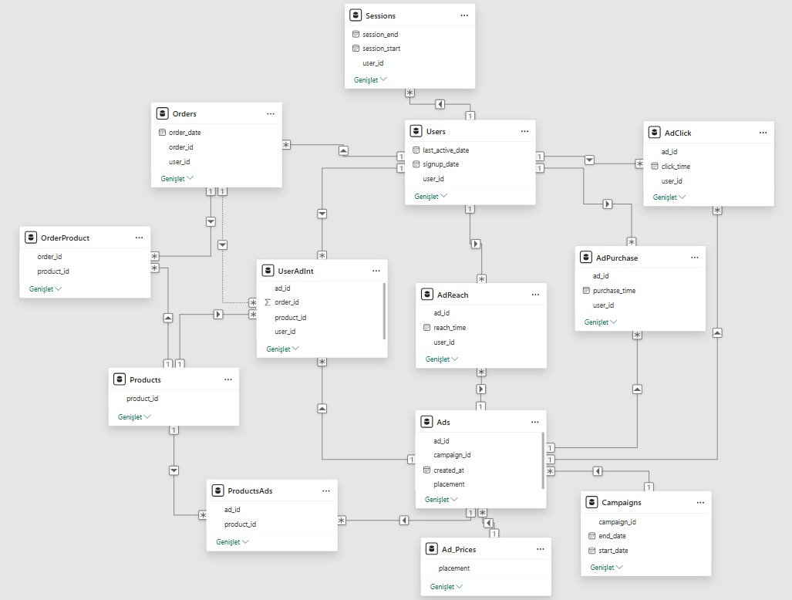
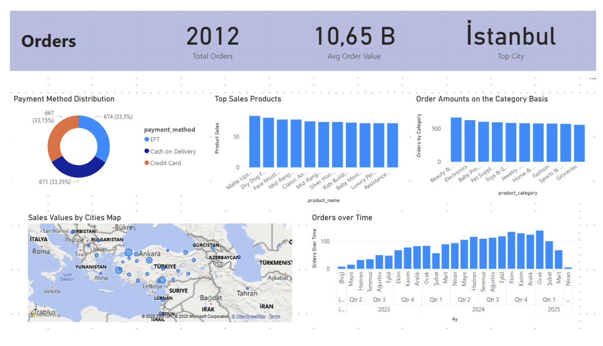

Full-stack analytics pipeline: Synthetic Data Generation, SQL Automation & Power BI.
Unlike standard analytics projects that rely on pre-existing datasets, this project involved engineering a complete data ecosystem from scratch. Using Python, we simulated a realistic e-commerce environment, generating a complex relational database that mirrors real-world business logic.
We strategically planned 13 interrelated tables to represent the entire customer journey: from ad impressions and clicks to session activities and final purchase conversions. This allowed for precise control over metrics like conversion probabilities, proportional ad reach, and budget dynamics.
The generated data was imported into MySQL, where we implemented a robust relational schema with strict foreign key constraints to ensure referential integrity. To move beyond simple storage, we automated critical calculations using Stored Procedures.

Using the finalized SQL database, we built an interactive Power BI dashboard consisting of 6 specialized pages. This enables real-time analysis of user behavior, sales performance, and marketing efficiency.

This project demonstrates the full data pipeline—from strategic dataset planning and